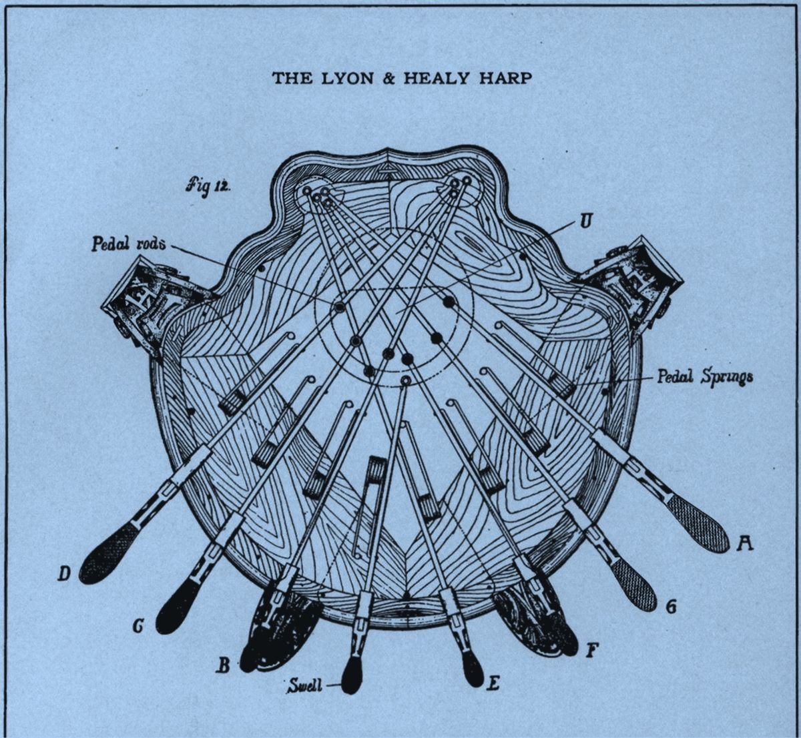
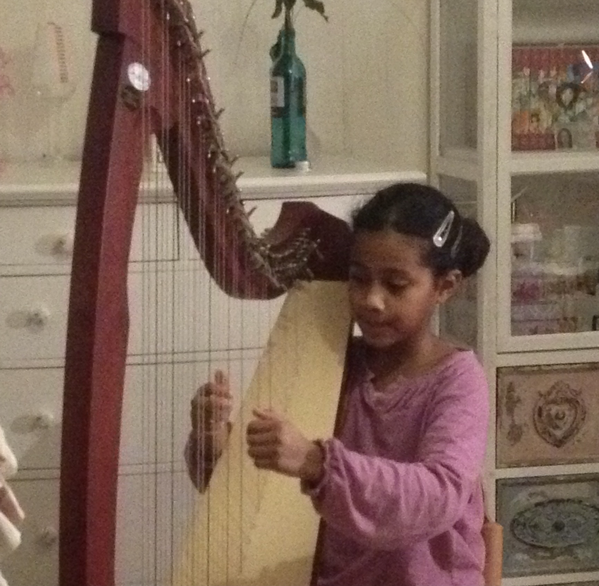
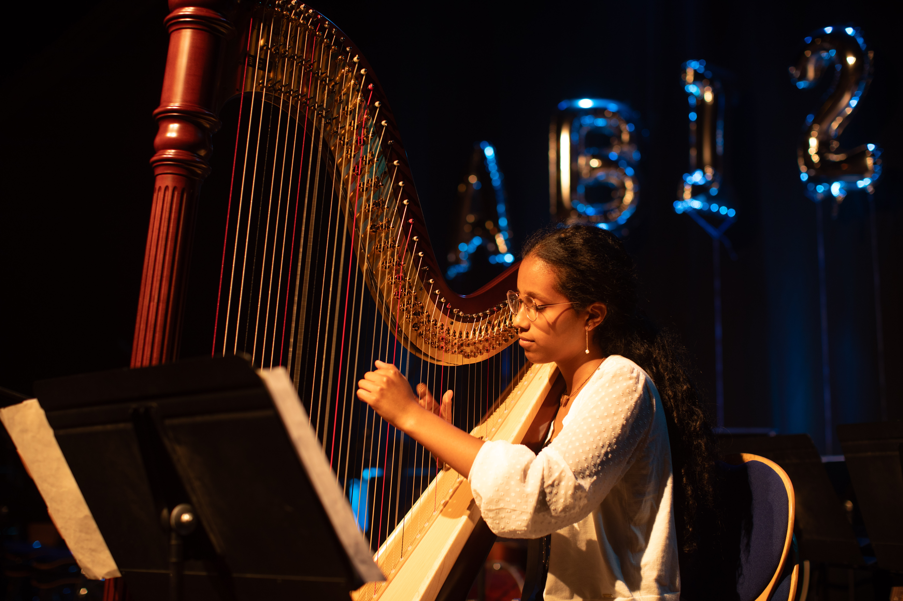
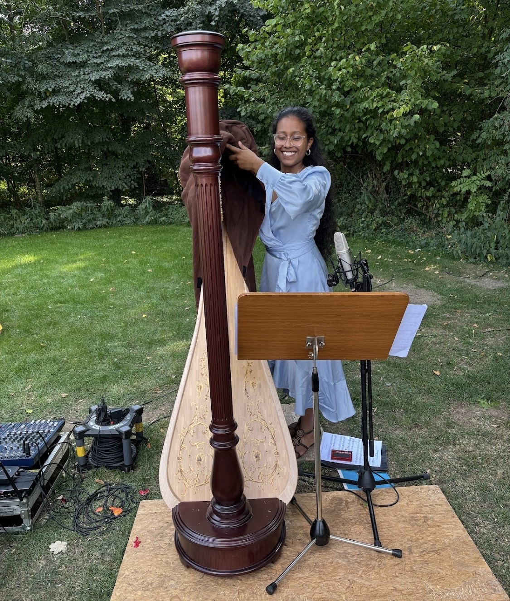
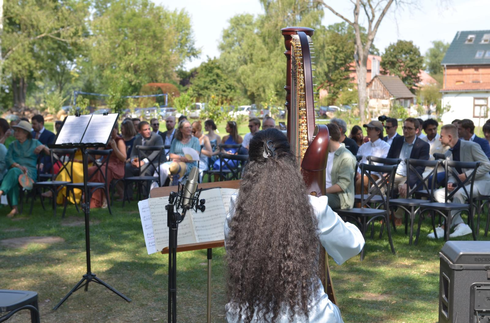

Main Idea:
For my final project I want to create a website that presents me as a harpist. Giving me the possibility to portray my journey. And ultimately also with the goal of offering a more organized decentralized booking service for different occasions.

Vibe:
Regarding the design of the website I am leaning towards an "abstract/interesting but organized" - design, not to linear/monotone, not to overwhelming, artsy.
Functions/Content i want to include
- About Me
- Experience/Education
- Repertoire
- Audio Examples
- Occasions (Wedding, funeral, birthday, )
- Form for inquiries (interactive User inputs)
some pictures:
to create connection with the people that visit my website i want to share fotos of me and the harp




Inspo websites:
These are some websites that I like (mostly graphic designers/artists):